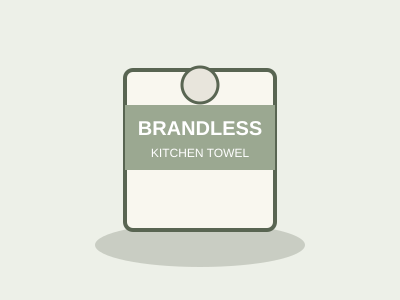

About this product
This kitchen towel roll is soft, strong and absorbent. It is useful for wiping spills, drying dishes and everyday kitchen cleaning. Made from sustainably sourced paper fibres, each sheet is engineered for maximum absorbency without falling apart when wet.
- 2-ply paper towel
- 17 metres per roll
- Unscented
- BPA-free, no added fragrance
- Recyclable core
Why Brandless?
At Brandless, we remove the brand markup. Every product is priced based solely on its materials and manufacturing cost. No celebrity endorsements, no fancy packaging surcharge — just an honest product at an honest price.
Our kitchen towels are tested in real households across Pakistan. We asked over 500 families to use them for a month and report back. The result: 94% said they would switch from their existing brand. The remaining 6% had very strong loyalty to a product that cost three times as much.
Usage tips
For light spills, one sheet is usually enough. Fold it once before placing it on the spill to give yourself two layers of absorption. For heavy-duty cleaning — cooking oil, raw meat juices or heavy grease — use two sheets at once. Avoid using with harsh chemical solvents, as these can break down the paper fibres.
Store your kitchen towel roll away from direct heat sources and moisture. A wall-mounted holder or a stand placed beside the stove is ideal. Keep the roll sealed in its packaging until first use to preserve freshness.
Environmental commitment
Brandless is committed to reducing our environmental impact. Our kitchen towels are manufactured at a facility powered by 40% renewable energy. The cardboard core is 100% recyclable, and we use vegetable-based inks for all printed packaging. We are actively working toward FSC-certified paper sourcing across our entire paper product range by 2027.
When you buy Brandless, you are not just getting a fair price — you are supporting a model of retail that values transparency, sustainability and community. Thank you for making the better choice.
Frequently asked questions
Are these towels septic-safe?
Yes. Brandless kitchen towels are fully biodegradable and septic-safe when disposed of in small quantities.
Can I use them with cleaning sprays?
Absolutely. They hold together well with most household spray cleaners. Spray the surface first, then wipe — do not spray directly onto the towel.
Are they suitable for baby use?
They are soft and unscented, but we always recommend using products specifically designed for infant skin for direct contact with babies.
How many sheets are in a roll?
Each roll contains approximately 85 two-ply sheets, giving you 17 metres of coverage. Perforations are spaced every 20 cm for easy tearing.
Can I return this product?
Yes. If you are not satisfied, contact us within 7 days of delivery and we will arrange a full refund or replacement at no extra cost.